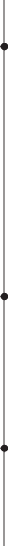
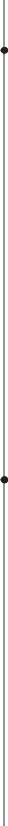

CONTACT
210 482 0803
conniemyou@gmail.com Schertz, TX 78154
PROFILE
I’m a Digital Media student based in South
Texas with a passion for all aspects of visual storytelling. I enjoy utilizing my skills in layout design and typography to channel my creativity into impactful designs. I’m eager to continue expanding my expertise while contributing new ideas to any creative team.
EDUCATION
SKILLS
Adobe Creative Suite Figma
Copywriting Layout Design Communication Problem-Solving
WORK EXPERIENCE

Intern | 2025
Assisted in digital design projects by creating social media graphics, website wireframes, and Figma assets for client sites.
 Created social media graphics aligned with brand guidelines.
Created social media graphics aligned with brand guidelines.  Designed website wireframes for new clients.
Designed website wireframes for new clients.
VOLUNTEER PROJECTS
Volunteer | 2021
Created promotional graphics to launch a community-based donation drive that provided essential supplies and enrichment items.
Member | 2020-2022
Designed digital and print materials for school-wide academic events and fundraisers.
ACADEMIC COURSEWORK
Interactive Digital Media
 Created a 12-page interactive magazine spread in Adobe InDesign featuring video and audio content in universally compatible formats.
Created a 12-page interactive magazine spread in Adobe InDesign featuring video and audio content in universally compatible formats.
 Designed professional client intake and commission forms for a mock web design company.
Designed professional client intake and commission forms for a mock web design company.
Interface Design
 Applied UI/UX design principles to design and prototype interactive app menus for an existing brand using Figma and Adobe XD.
Applied UI/UX design principles to design and prototype interactive app menus for an existing brand using Figma and Adobe XD.
Utilized existing brand guidelines and imagery to design app wireframes and mockup screens within Adobe Illustrator to ensure consistency with the company’s visual identity.
Web Design I + II
 Utilized HTML and CSS to develop a 5-page website from scratch with multi-page navigation, linked resources, blog posts, and interactive image galleries.
Utilized HTML and CSS to develop a 5-page website from scratch with multi-page navigation, linked resources, blog posts, and interactive image galleries.
 Redesigned mutliple static websites with HTML, CSS, and JavaScript while implementing SASS post-processing and ensuring proper file structure.
Redesigned mutliple static websites with HTML, CSS, and JavaScript while implementing SASS post-processing and ensuring proper file structure.
Typography
Applied principles of typographic hierarchy, spacing, and readability to create professional layouts and cover art.
Intermediate Layout Design
 Designed multi-page print and digital layouts in Adobe InDesign with an emphasis on balance, composition, and visual flow.
Designed multi-page print and digital layouts in Adobe InDesign with an emphasis on balance, composition, and visual flow.
Pre-Press and Print Production
 Learned industry-standard practices for file preparation, color correction, and print specifications.
Learned industry-standard practices for file preparation, color correction, and print specifications.
Prepared print-ready documents, including bleeds, crop marks, and CMYK color setup.
Digital Illustration
Created original concept art and finalized vector-based illustrations for existing brands and advertisements within Adobe Illustrator.
